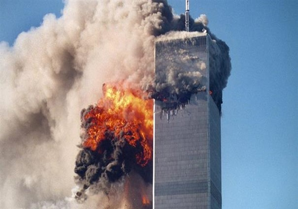
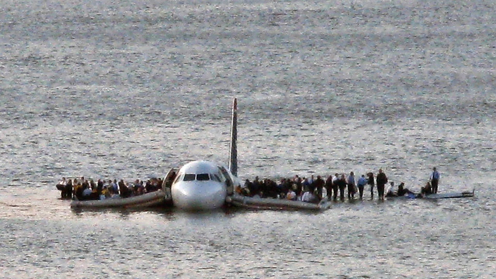

The September 11 attacks, also commonly referred to as 9/11, were a series of four coordinated terrorist attacks by the militant Islamic terrorist group al-Qaeda against the United States of America on the morning of Tuesday, September 11, 2001. On that morning, four commercial airliners traveling from the northeastern United States to California were hijacked mid-flight by 19 al-Qaeda terrorists. The hijackers were organized into three groups of five hijackers and one group of four. Each group had one hijacker who had received flight training and took over control of the aircraft. Their explicit goal was to crash each plane into a prominent American building, causing mass casualties and partial or complete destruction of the targeted buildings. In the immediate aftermath of the attacks, suspicion quickly fell onto al-Qaeda. The United States under George W. Bush administration formally responded by launching the War on Terror and invading Afghanistan to depose the Taliban, which had not complied with U.S. demands to expel al-Qaeda from Afghanistan and extradite al-Qaeda leader Osama bin Laden. Bin Laden escaped to the White Mountains where he came under attack by U.S.-led forces, but managed to break out. Although bin Laden initially denied any involvement, in 2004 he formally claimed responsibility for the attacks. Al-Qaeda and bin Laden cited U.S. support of Israel, the presence of U.S. troops in Saudi Arabia, and sanctions against Iraq as motives. After evading capture for almost a decade, bin Laden was located in a hideout in Abbottabad, Pakistan and subsequently killed during Operation Neptune Spear on May 2, 2011. The destruction of the World Trade Center and nearby infrastructure seriously harmed the economy of New York City and created a global economic recession. Many countries strengthened their anti-terrorism legislation and expanded the powers of law enforcement and intelligence agencies to prevent terrorist attacks. The U.S. and Canadian civilian airspaces were closed until September 13, while Wall Street trading was closed until September 17. Many closings, evacuations, and cancellations followed, out of respect or fear of further attacks. Cleanup of the World Trade Center site was completed in May 2002, and the Pentagon was repaired within a year.
On January 15, 2009, US Airways Flight 1549, an Airbus A320 on a flight from New York City's LaGuardia Airport to Charlotte, North Carolina, struck a flock of birds shortly after take-off, losing all engine power. Unable to reach ay airport for an emergency landing due to their low altitude, pilots Chesley "Sully" Sullenberger and Jeffrey Skiles glided the plane to a ditching in the Hudson River off Midtown Manhattan. All 155 people on board were rescued by nearby boats, with a few serious injuries. This water landing of a powerless jetliner with no deaths became known as the Miracle on the Hudson, and a National Transportation Safety Board official described it as "the most successful ditching in aviation history". The Board rejected the notion that the pilot could have avoided ditching by returning to LaGuardia or diverting to nearby Teterboro Airport.
